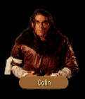

|  |
|
|
| FIRST VISIT | SECOND VISIT |
|
They were not alone. Gorath's pulse quickened as he saw the lone figure approach; but when it became apparent they were not being attacked, he relaxed a bit, squinted slightly in an attempt to see who was about to join them. CALIN: If you had not slain that Wyvern... I am grateful, but I beg you go from this place cousin and take with you the evil you have brought. You may not take what will not have you, you cannot harm what will not be harmed. You and your people belong among your own. GORATH: I do not raid with my kin. Grant me passage, eledhel. I have come to look upon the face of the Shining Moon. CALIN: The old tongue... I think then your coming will be well received in Elvandar. Tell my mother and Warleader Tomas I am well and I will continue on toward Moraelin to meet the moredhel there. Perhaps we can yet put a halt to their raids. OWYN: What's the Shining Moon? Is it in Elvandar? CALIN: She, not it, young human friend. Your companion refers to our Queen Aglaranna. In your tongue it means something like Shining Moon. OWYN: Is the way to Elvandar passable? CALIN: The attacks directed by the moredhel have made travel a difficulty. Fires are burning all across Elvandar and the Spellweavers are hard pressed to attend to them all. Most roads are impassable, but the western path was clear last I heard of it.
|
They were not alone. Gorath's pulse quickened as he saw the lone figure approach; but when it became apparent they were not being attacked, he relaxed a bit, squinted slightly in an attempt to see who was about to join them. CALIN: Delekhan has dealt us a great deal of grief this day and in some small way he must pay in measure. I hope that your journeys have done you greater good this day than mine have done me.
|
| SURVIVAL |
OWYN: I'm surprised you've been able to survive alone with the moredhel raiding over your borders. How have you escaped?CALIN: The moredhel can do little harm to the eledhel within Elvandar and they would be fools to try. It would take remarkable strength of will for a moredhel to enter the forest with any evil intent and even a more remarkable will for him to survive such an attempt. It is part of the magic that protects our home.
OWYN: What about Gorath? He hasn't had any problems entering the forest.
CALIN: You have not told the boy?
GORATH: My returning is of no consequence to him. He has his own quest to fulfill.
CALIN: Returning? You mean you've been here before?
CALIN: You will understand certain things later should events unfold as I imagine. There is still the matter of your survival to deal with, however. Though our cousin Gorath moves with great grace, you are not so sure-footed. For your part in my rescue, I should like to teach you how to move the elven way.
OWYN: What about Gorath?
CALIN: It is not custom between our kin, but if you wish it...I will teach him what I know of using a crossbow... Come. We cannot be long at this.
Calin waited.
Seated cross-legged on the ground, he watched through half-lidded eyes as Owyn approached from a thick copse of trees. Although he still moved with little grace, he had made remarkable improvement in a short time.
"Do I move like an elf now?" Owyn asked, a look of eager anticipation written on his face.
"I wouldn't try to sneak up on the Warleader as yet, but yes, you have learned a bit," the elf replied. "Why don't you go around and try it again? You were still rustling the leaves as you approached."
Once the boy was gone, Calin shifted his gaze to study Gorath's progress with the crossbow. Though it was readily apparent the moredhel was capable of doing great damage with the weapon, his concentration was elsewhere.
"I am told the call can be painful if one is uncertain of their feelings," Calin said. "You need not endure the pain. We will welcome you no matter who or what you might have been to us in the past."
Gorath nodded without looking at the elf, his gaze fixed straight ahead as he resighted his crossbow with trembling hands and fired into the undergrowth.
"Hey!" Owyn shouted in the distance. Crashing back through the brush, he reentered the clearing. "Could you be a little more careful where you're firing that thing? That last shot came far too close to me."
Rising to his feet, Calin shook his head. "Then it is time the lessons came to an end."
| WYVERNS |
OWYN: How have you been holding off the wyverns? I would have thought this many of them could have burned Elvandar to the ground.CALIN: Fortunately, the spells the moredhel have been using to control them aren't too strong or too complicated. Even with what little knowledge I have about magic, Tathar managed to teach me a cantrip that will turn them away.
OWYN: Sounds like it might come in useful. If you have time, do you think you could teach it to me?
CALIN: You can have the scroll I studied. I don't think I will need it any longer, though I warn you, you'll need to find one of those beast's eggs each time you cast the spell. Tathar tried to explain the principle to me, but I had trouble following the complexities of it.
| ELVANDAR |
GORATH: What way will take us the most quickly to Elvandar?CALIN: If it were merely a matter of which way would take the least distance, I would suggest you take the northern bridge, but I understand from my scouts that wyverns have been alighting in heavy numbers near there. It would be far less dangerous to travel to the far western bridge and there cross through the sleeping glades, though you may have some difficulties dealing with them. From there, bear directly north until you reach Grey Horn. You will find an entrance to a subterranean, ancient ruin there. Once you emerge from it, you will be very near the heart of Elvandar itself.
| ANCIENT RUIN |
OWYN: One nice thing about travelling underground, at least there is less chance of something dropping down on us from above. With all these wyverns flying about, I half expect one to come flapping out of nowhere any time I turn my head.CALIN: You may not find you are quite so enthusiastic about the ancient ruin once you pass through it. We do not use it much.
OWYN: Please tell me it isn't infested with a Brak Nurr or something equally repulsive.
CALIN: Infested? An interesting description, but not in the way you may think. None of the elven blood may easily walk its corridors without some measure of dread.
GORATH: It is of the Valheru, then.
CALIN: The Warleader assures us none of their ancient essence may touch us here, but the malevolence that permeates that place cannot be easily dismissed. We have not been so foolish, however, to leave it open to any that wish simply to enter it. There is too great a danger something there has been unfound that is beyond our control. Only a few of the elves have a key that will unlock its doors.
OWYN: How are we going to get in, then?
CALIN: I will give Gorath the key I carry. That is all that is required.
OWYN: As simple as that?
CALIN: There is nothing simple about it. The force of will it has taken for Gorath to have come even this close to Elvandar is monumental. Unless his reason for being here was of the utmost importance, he would have fled this forest long ago.
I trust him.
| SLEEPING GLADES |
GORATH: You said we might encounter some difficulty with the sleeping glades?CALIN: It is one of Elvandar's natural defenses. Those who enter them suddenly find themselves quite drowsy and will sleep for days on end. Many die in their sleep from lack of nourishment.
GORATH: Effective, if non-selective. I assume there is a way they may be crossed.
CALIN: It wouldn't be practical to live in a house for which there is no door. Though the sizes of the glades are variable, when you approach them, you'll experience a slight feeling of disorientation. There is, however, a little known path that can carry you safely through them. The glades run parallel to a mountain range Southwest of here, north of the river's fork. They are difficult to cross, but you may circumnavigate them. If you head to the fork of the river then stay close to the mountains to the north, you should be untroubled by the glades.